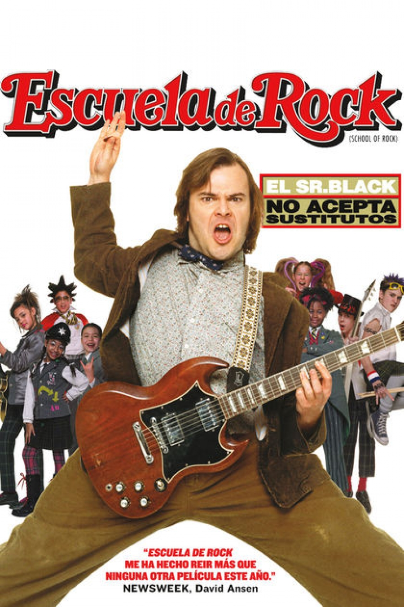
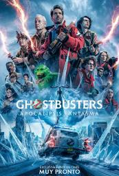
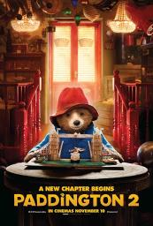

Escuela de Rock (2003)
Tras ser expulsado de un grupo de rock, Dewey Finn trabaja como profesor substituto en una estricta escuela privada, e intenta convertirla en un grupo de rock.

¿Y donde estan las rubias? (2004)
Dos agentes del FBI en desgracia van encubiertos en un esfuerzo por proteger a unas herederas de hoteles, las hermanas Wilson, de un complot de secuestro.

Ghostbusters: Apocalipsis Fantasma (2024)
Cuando el descubrimiento de un artefacto antiguo libera una fuerza maligna, los nuevos y viejos Ghostbusters unen sus fuerzas para proteger su hogar y salvar al mundo de una segunda era de hielo.

Paddington 2 (2017)
Completamente integrado a la sociedad, el oso Paddington (Ben Whishaw) vive feliz con los Brown, gozando de la simpatía y respeto de la comunidad de Windsor Gardens.